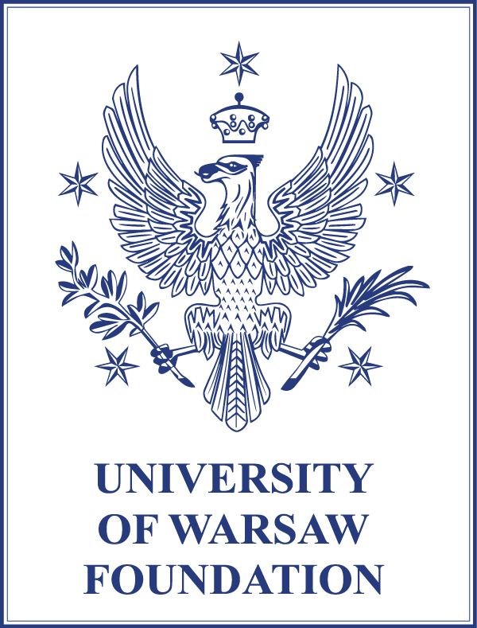

Short Curriculum Vitae
Name: Javier de Lucas Araujo
Date and place of Birth: Talavera de la Reina (Spain) on September 2, 1981
Addresses:
Permanent position: Department of Mathematical Methods
in Physics, room 5.46, Faculty of Physics, University of
Warsaw, Pasteura 5, 02-093, Warsaw, Poland.
Temporary position: External member at the Math-Phys
Laboratorium of the Centre de Recherches Mathématiques,
Universite de Montreal, Pavillon Andre-Aisenstadt, 2920,
Chemin de la Tour, Montreal, QC H3T 1J4.
Email: javier.de.lucas@fuw.edu.pl
Detailed curriculum: [link]
ResearcherID: C-1498-2009
 0000-0001-8643-144X
0000-0001-8643-144X
Degrees
Simons-CRM Professor at the Center de Recherchers Mathematiques, University of Montreal (2023)
Associate Professor, Faculty of Physics, University of Warsaw (2022)
Polish Habilitation in Physics, University of Warsaw (2017)[Habilitation]
Spanish Habilitation: Profesor contratado doctor in Applied Mathematics, ANECA, Spain (2012)
PhD in Physics, University of Zaragoza, Spain (2009)[PhD dissertation]
MSc in Physics, University of Salamanca, Spain (2004)
Prizes and Distinctions (most relevant in bold)
• 2025 - Rector prize of third degree for research achievements,
Faculty of Physics, University of Warsaw.
• 2024 - Award in recognition of achievements affecting the
development and prestige of the University of Warsaw,
University of Warsaw.
• 2024 - Chosen External member at the Math-Phys
Laboratorium of the Centre de Recherches Mathématiques,
Universite de Montreal.
• 2024 - Nomination to Didactic Award ‘Zygmunt Ajduk’ in
recognition to outstanding exercises classes (Analysis II
R), Faculty of Physics, University of Warsaw (Summer
Semester).
• 2023 - Individual prize of second degree for research
achievements, Faculty of Physics, University of Warsaw.
• 2023 - Simons–CRM Professorship, Centre de Recherches
Mathématiques (CRM), University of Montreal, Canada (one of
the most reputable research positions at the CRM).
• 2022 - Nomination to Didactic Award ‘Zygmunt Ajduk’ in
recognition to outstanding exercises classes (Analysis III
Special Functions in Mathematical Physics), Faculty of
Physics, University of Warsaw (Summer Semester).
• 2021 - Dean Prize of third degree for research
achievements.
• 2021 - Dean Prize in commemoration to Rector Stefan
Pienkowski and Rector Grzegorz Białkowski for the best
researcher in the Faculty of Physics of the University of
Warsaw (younger than 40 years old).
• 2020 - UW Rector Prize of second degree in recognition to
the publication “A Guide to Lie Systems with Compatible
Geometric Structures”, research on the differential geometry
properties of differential equations, and didactic
achievements, University of Warsaw.
• 2020 - UW Didactic Award ’Zygmunt Ajduk’ in
reocgnition to outstanding exercises classes (Differential
Geometry), Faculty of Physics, University of Warsaw.
• 2019 - Award in recognition of achievements affecting the
development and prestige of the University of Warsaw,
University of Warsaw.
• 2018 - Nomination to the best paper prize of the
conference ,,10th International Symposium on Quantum theory
and symmetries and 12th International Workshop on Lie
Theory and Its Applications in Physics”(+70 participants).
• 2017 - Didactic Award of the Rector of the University of
Warsaw (Natural and Mathematical Sciences Faculties).
• 2016 - Award in recognition of achievements affecting the
development and prestige of the University of Warsaw,
University of Warsaw.
• 2015 - Individual prize of third degree, Faculty of Physics,
University of Warsaw.
• 2014 - Best teacher of the Faculty of Physics, University of
Warsaw (UW Student council).
• 2013 - Didactic Award for outstanding classes and
lectures, Summer term, University of Warsaw.
• 2011 - Postdoc fellowship for young researchers, IMPAN.
• 2011 - Special Award for Doctoral Theses, University of
Zaragoza, year 2009/2010.
• 2010 - Postdoc fellowship for young researchers, IMPAN.
• 2009 - Postdoc fellowship for young researchers, IMPAN.
• 2006 - F.P.U. Fellowship funded by the Ministerio de
Educacion y Ciencia (Ministry of Education and Science) for
the best students in Spain to accomplish my PhD thesis
project “Lie systems and applications to Quantum Mechanics”.
• 2005 - Fellowship funded by the Faculty of Science of the
University of Salamanca for the best students in the
University of Salamanca starting their PhD.
• 2005 - F.P.I. Fellowship funded by the Junta de Castilla y
León (Castilla y Leon council) for the best students in the
Castilla y León region starting their PhD.
• 2003 - Excellences Fellowship ‘Beca de colaboración’ funded by the
Ministry of Education, Culture and Sport (Spain) (2400 fellowships granted in 2004 for all students finishing their studies in all Universities in Spain).
• 1999 - One of the best scores in PAU (Prueba de acceso a la Universidad) in Castilla-La Mancha and Spain (score 9.5/10).
• 1999 - Second position in the National Mathematics Olympiad in Castilla-La Mancha and participation in the final national competition in Granada.
Gamma Research group
The Gamma Research Group, led by prof. UW Javier de Lucas Araujo at the University of Warsaw, is an internationally oriented research team advancing cutting-edge geometric methods in mathematics and mathematical physics. Our mission is to develop unifying geometric frameworks that connect differential geometry, dynamical systems, and field theory, providing both deep theoretical insight and broad applicability across disciplines.
Research Focus
We work at the intersection of:
- Geometric study of jets, symmetries, differential equations and their applications.
- Geometric mechanics and field theories, advancing geometric foundations for classical and modern dynamical systems.
- Symplectic, Poisson, contact, and generalized geometric structures, including reduction procedures and multisymplectic frameworks.
- Integrability, Lie systems, and superposition principles, developing structural approaches to non-autonomous systems and partial differential equations.
- Stochastic and numerical geometric methods, bridging geometric theory with computational and probabilistic techniques.
Research Environment and Activities
The group combines rigorous theoretical development with actively supervised PhD projects and a strong international network of collaborators. We foster a dynamic research environment through:
- Am online weekly research seminar on modern geometric approaches, attracting global participation from leading experts and disseminated through widely accessed online platforms.
- A weekly hybrid reading group on Lie groupoids and Lie algebroids.
- Monographic courses on geometric mechanics in the Faculty of Physics of the University of Warsaw.
- Ongoing collaborative work with leading researchers and institutions, including the Universitat Rovira i Virgili (Spain), the Polytechnic University of Catalonia (Spain) and the Centre de Recherches Mathematiques of the University of Montreal (Canada).
- Regular involvement in international conferences and workshops in geometry and mathematical physics. Organization of conferences in the Faculty of Physics of the University of Warsaw.
Impact
The group’s research outputs span foundational advances—including monographs and conceptual frameworks—as well as impactful applications, positioning Gamma as a global reference point for modern geometric methods in mathematics and physics.
Current members:
- X. Rivas, Universidad Rovira i Virgili, Tarragona, Spain
- S. Vilari\~no, University of Zaragoza, Spain
- A. Lopez-Gordon, IMPAN, Poland
- B. Zawora, KU Leuven, Belgium
- T. Sobczak, PhD, 2 year
- A. Maskalaniec (with J. Grabowski), PhD, 2 year
- J. Lange, PhD, defense planned 2026
- M. Wojtkowiak, second degree student
- M. Flis, second degree student
Publications. Citations: 1415 Hirsch: 22 (Google scholar): Google profile
- J. de Lucas, Classification of smooth finite-dimensional Lie algebras of vector fields on the real line, 2026.
- J.F. Carinena, J. de Lucas, Infinitesimal time reparametrisation of nonautonomous systems and its applications, 2026.
- M. Flis and J. de Lucas, Lie groupoids and Lie symmetries of differential equations, 2026.
- J.F. Carinena, J. de Lucas, and M. Wojtkowiak, Contact canonoid transformations, 2026.
- A. Lopez-Gordon, J. de Lucas, B.M. Zawora, Stability of contact Hamiltonian systems, 2025.
- J. de Lucas, J. Lange, Reduction of twisted Poisson manifolds and applications to Hamilton–Jacobi equations, To be submitted, 2026.
- J. de Lucas, Jet Bundles as Higher-Order Polarised k-Contact Manifolds, To be submitted, 2026. [arXiv]
- J. de Lucas, X. Rivas, S. Vilariño, B.M. Zawora, Marsden–Meyer–Weinstein reduction for k-contact field theories, submitted, 2026. [arXiv]
- J. de Lucas, X. Rivas, T. Sobczak, Foundations on k-contact geometry, submitted [arXiv]
- J. Lange, J. de Lucas, M. Krych A Guide to Applications of k-Contact Geometry in Dissipative Field Equations, submitted, 2026. [arXiv]
- J. de Lucas, J. Lange, C. Sardon, X. Rivas, Hamilton–Jacobi theory for non-conservative field theories in the k-contact framework, JPA, to appear, 2026. [arXiv] [journal]
- R. Campoamor-Stursberg, O. Carballal, F.J. Herranz, J. de Lucas, Mixed superposition rules for Lie systems, compatible geometric structures, and applications, submitted [arXiv]
- M. Hontarenko, J. de Lucas, and A. Maskalaniec, A k-contact geometrical approach to pseudo-gauge transformation, J. Phys. A 59, 075201 (2026). [arXiv] [journal]
- J. de Lucas, X. Rivas, T. Sobczak, k-contact Lie systems: theory and applications, Geometric Mechanics, to appear in 2026. [arXiv] [journal]
- A.M. Grundland, J. de Lucas, and B.M. Zawora, Stability analysis of the n-dimensional Nambu-Goto action gas models, J. Phys. A 58, 50 (2025). [arXiv] [journal]
- R. Campoamor-Stersberg, F.J. Herranz, J. de Lucas, Nonlinear Lie-Hamilton systems: t-Dependent curved oscillators and Kepler-Coulomb Hamiltonians, Comm. Nonl. Science Num. Sim. 152, Part B, 109206 (2026) [arXiv] [journal]
- J. de Lucas, M. Zajac, Applications of Standard and Hamiltonian Stochastic Lie Systems, in: F. Nielsen, F. Barbaresco (eds.), Geometric Science of Information, Lecture Notes in Computer Science, vol. 16035, Springer, Cham, 2026, pp. 354–363. [arXiv] [journal]
- E. Fernandez-Saiz, J. de Lucas and M. Zajac, Hamiltonian stochastic Lie systems and applications, J. Phys. A 58, 415202, 2025 [arXiv] [journal]
- A.M. Grundland, J. de Lucas, Quasi-rectifiable Lie algebras for partial differential equations, Nonlinearity, 38, 025006 (2025) [arXiv] [journal]
- L. Colombo, J. de Lucas, X. Rivas, B. Zawora, An energy-momentum method for ordinary differential equations with an underlying k-polysymplectic manifold, J. Nonlinear Science 35, 42 (2025) [arXiv] [journal]
- X. Gràcia, J. de Lucas, X. Rivas, N. Román-Roy, On Darboux theorems for geometric structures induced by closed forms, RACSAM 118, 131 (2024) [arXiv] [journal]
- J. de Lucas, J. Lange, X. Rivas, A symplectic approach to Schrödinger equations in the infinite-dimensional unbounded setting, AIMS Mathematics, 2024 [arXiv] [journal]
- J. de Lucas, A. Maskalaniec, B.M. Zawora, Cosymplectic geometry, reductions, and energy-momentum methods with applications , J. Nonl. Math. Phys. 31, 64 (2024) [arXiv] [journal]
- L. Blanco, F. Jiménez, J. de Lucas, C. Sardon, Geometry preserving numerical methods for physical systems with finite-dimensional Lie algebras, J. Nonlinear Science 34, 26 (2024) [arXiv] [journal]
- J. de Lucas, X. Rivas, S. Vilariño, B.M. Zawora, On k-polycosymplectic Marsden–Weinstein reductions, J. Geom. Phys. 191, 104899 (2023) [arXiv] [journal]
- J. de Lucas, X. Rivas, Contact Lie systems: theory and applications, J. Phys. A 56, 335203 (2023) [arXiv] [journal]
- L. Blanco, F. Jiménez, J. de Lucas, C. Sardon, Geometric numerical methods for Lie systems and their application in optimal control, Symmetry 15, 1285 (2023) [arXiv] [journal]
- J. F. Cariñena, J. de Lucas, C. Sardón, Quantum quasi-Lie systems: properties and applications, EPJP 138, 339 (2023) [arXiv] [journal]
- A.M. Grundland, J. de Lucas, Multiple Riemann wave solutions of the general form of quasilinear hyperbolic systems, Adv. Diff. Eq. 28, 73–112 (2023) [arXiv] [journal]
- O. Esen, J. de Lucas, C. Sardon, M. Zajac, Decomposing Euler–Poincaré flow on the space of Hamiltonian vector fields, Symmetry 15, 23 (2022) [journal]
- C. Gonera, J. Gonera, J. de Lucas, W. Szczesek, B.M. Zawora, More on Superintegrable Models on Spaces of Constant Curvature, Regular and Chaotic Dynamics 27, 561–571 (2022) [arXiv] [journal]
- J. F. Cariñena, J. de Lucas, D. Wysocki, Stratified Lie systems: Theory and applications, J. Phys. A 55, 385206 (2022) [arXiv] [journal]
- J. de Lucas, X. Gràcia, X. Rivas, N. Román-Roy, S. Vilariño, Reduction and reconstruction of multisymplectic Lie systems, J. Phys. A 55, 295204 (2022) [arXiv] [journal]
- J. de Lucas, D. Wysocki, Darboux families and the classification of real four-dimensional indecomposable coboundary Lie bialgebras, Symmetry 13, 465 (2021) [arXiv] [journal]
- A. Ballesteros, R. Campoamor-Stursberg, E. Fernandez-Saiz, F.J. Herranz, J. de Lucas, Poisson-Hopf deformations of Lie-Hamilton systems revisited: deformed superposition rules and applications to the oscillator algebra, J. Phys. A 54, 205202 (2021) [arXiv] [journal]
- J. de Lucas, D. Wysocki, A Grassmann and graded approach to coboundary Lie bialgebras, their classification, and Yang–Baxter equations, J. Lie Theory, 1161–1194 (2020) [arXiv] [journal]
- J. Lange, J. de Lucas, Geometric Models for Lie–Hamilton systems on ℝ², Mathematics 7, 1053 (2019) [arXiv] [journal]
- M.M. Lecanda, X. Gràcia, J. de Lucas, S. Vilariño, Multisymplectic structures and invariant tensors for Lie systems, J. Phys. A 52, 215201 (2019) [arXiv] [journal]
- J.F. Cariñena, J. Grabowski, J. de Lucas, Quasi-Lie Schemes for PDEs, Int. J. Geom. Methods Mod. Phys. 16, 1950096 (2019) [arXiv] [journal]
- J. de Lucas, C. Sardón, A Guide to Lie systems with Compatible Geometric Structures, World Scientific, Singapore, 408, pp. 2020 [book]
- A.M. Grundland, J. de Lucas, On the geometry of the Clairin theory of conditional symmetries for higher-order systems of PDEs with applications, Diff. Geom. Appl. 67, 101557 (2019) [arXiv] [journal]
- A.M. Grundland, J. de Lucas, A cohomological approach to immersion formulas via integrable systems, Selecta Mathematica (N.S.) 24, 4749–4780 (2018) [arXiv] [journal]
- A. Ballesteros, R. Campoamor-Stursberg, E. Fernandez-Saiz, F.J. Herranz, J. de Lucas, A unified approach to Poisson–Hopf deformations of Lie–Hamilton systems based on sl(2), Springer Proc. Math. Stat. (2018) [arXiv] [journal]
- A. Ballesteros, R. Campoamor-Stursberg, E. Fernandez-Saiz, F.J. Herranz, J. de Lucas, Poisson-Hopf algebra deformations of Lie-Hamilton systems, J. Phys. A 51, 065202 (2018) [arXiv] [journal]
- F.J. Herranz, J. de Lucas, M. Tobolski, Lie-Hamilton systems on curved spaces: A geometrical approach, J. Phys. A 50, 495201 (2017) [arXiv] [journal]
- M.M. Lewandowski, J. de Lucas, Geometric features of Vessiot–Guldberg Lie algebras of conformal and Killing vector fields on ℝ², Banach Center Publ. 113, 243–262 (2017) [arXiv] [journal]
- A.M. Grundland, J. de Lucas, A Lie systems approach to the Riccati hierarchy and partial differential equations, J. Differential Equations 263, 299–337 (2017) [arXiv] [journal]
- P. García-Estévez, F.J. Herranz, J. de Lucas, C. Sardón, Lie symmetries for Lie systems: Applications to systems of ODEs and PDEs, Appl. Math. Comp. 273, 435–452 (2016) [arXiv] [journal]
- J. de Lucas, M. Tobolski, S. Vilariño, Geometry of Riccati equations over normed division algebras, J. Math. Anal. Appl. 440, 394–414 (2016) [arXiv] [journal]
- J.F. Cariñena, J. de Lucas, M.F. Rañada, Jacobi multipliers, nonlocal symmetries, and harmonic oscillators, J. Math. Phys. 56, 063505 (2015) [arXiv] [journal]
- J.F. Cariñena, J. de Lucas, Quasi–Lie families, schemes, invariants and their applications to Abel equations, J. Math. Anal. Appl. 430, 648–671 (2015) [arXiv] [journal]
- J. de Lucas, S. Vilariño, k-symplectic Lie systems: theory and applications, J. Differential Equations 258(6), 2221–2255 (2015) [arXiv] [journal]
- A. Ballesteros, A. Blasco, F.J. Herranz, C. Sardón, Lie–Hamilton systems on the plane: Properties, classification and applications, J. Differential Equations 258, 2873–2907 (2015) [arXiv] [journal]
- A. Blasco, F.J. Herranz, J. de Lucas, C. Sardón, Lie–Hamilton systems on the plane: applications and superposition rules, J. Phys. A 48, 345202 (2015) [arXiv] [journal]
- F.J. Herranz, J. de Lucas, C. Sardón, Jacobi–Lie systems: theory and low dimensional classification, DCDS-A 35, 605–614 (2015) [arXiv] [journal]
- J.F. Cariñena, J. Grabowski, J. de Lucas, C. Sardón, Dirac–Lie systems and Schwarzian equations, J. Differential Equations 257(7), 2303–2340 (2014) [arXiv] [journal]
- A. Ballesteros, J.F. Cariñena, F.J. Herranz, J. de Lucas, C. Sardón, From constants of motion to superposition rules for Lie–Hamilton systems, J. Phys. A 46, 285203 (2013) [arXiv] [journal]
- J.F. Cariñena, J. de Lucas, P. Guha, A quasi-Lie schemes approach to the Gambier equation, SIGMA 9, 026 (2013) [arXiv] [journal]
- J. Grabowski, J. de Lucas, Mixed superposition rules and the Riccati hierarchy, J. Differential Equations 254, 179–198 (2013) [arXiv] [journal]
- J.F. Cariñena, J. de Lucas, J. Grabowski, Superposition rules for higher-order systems and their applications, J. Phys. A 45, 185202 (2012) [arXiv] [journal]
- J.F. Cariñena, J. de Lucas, M.F. Rañada, Un enfoque geométrico de las ecuaciones diferenciales de Abel de primera y segunda clase, Actas del XI Congreso Dr. Antonio Monteiro, 63–82 (2012) [journal]
- J.F. Cariñena, J. de Lucas, C. Sardón, A new Lie systems approach to second-order Riccati equations, Int. J. Geom. Methods Mod. Phys. 9, 1260007 (2012) [arXiv] [journal]
- J.F. Cariñena, J. de Lucas, A. Ramos, A geometric approach to integrability conditions for systems of ordinary differential equations, SIGMA 7, 067 (2011) [arXiv] [journal]
- J.F. Cariñena, J. de Lucas, C. Sardón, Lie–Hamilton systems: theory and applications, Int. J. Geom. Methods Mod. Phys. 10, 1350047 (2013) [arXiv] [journal]
- J.F. Cariñena and J. de Lucas, Superposition rules and second-order Riccati equations, J. Geom. Mech. 3, 1–22 (2011) [arXiv] [journal]
- J.F. Cariñena and J. de Lucas, Superposition rules and second-order differential equations, in AIP Conference Proceedings 1360, 127–132 (2011) [arXiv] [journal]
- P.G. Estevez, M.L. Gandarias, and J. de Lucas, Classical Lie symmetries and reductions of a nonisospectral Lax pair, J. Nonlinear Math. Phys. 18, 51–60 (2011) [arXiv] [journal]
- J.F. Cariñena and J. de Lucas, Integrability of Lie systems through Riccati equations, J. Nonlinear Math. Phys. 18, 29–54 (2011) [arXiv] [journal]
- J.F. Cariñena, J. de Lucas, and M.F. Rañada, A geometric approach to integrability of Abel differential equations, Int. J. Theor. Phys. 50, 2114–2124 (2011) [arXiv] [journal]
- J.F. Cariñena and J. de Lucas, Lie systems: theory, generalizations, and applications, Dissertationes Math. 479, 1–169 (2011) [arXiv] [journal]
- J.F. Cariñena, J. Grabowski, and J. de Lucas, Lie families: theory and applications, J. Phys. A 43, 305201 (2010) [arXiv] [journal]
- R. Flores, J. de Lucas, and Y. Vorobiev, Phase splitting for periodic Lie systems, J. Phys. A 43, 205208 (2010) [arXiv] [journal]
- J.F. Cariñena, J. de Lucas, and M.F. Rañada, Lie systems and integrability conditions for t-dependent frequency harmonic oscillators, Int. J. Geom. Methods Mod. Phys. 7, 289–310 (2010) [arXiv] [journal]
- J.F. Cariñena and J. de Lucas, Quantum Lie systems and integrability conditions, Int. J. Geom. Meth. Mod. Phys. 6, 1235–1252 (2009) [arXiv] [journal]
- J.F. Cariñena, P.G.L. Leach, and J. de Lucas, Quasi-Lie schemes and Emden–Fowler equations, J. Math. Phys. 50, 103515 (2009) [arXiv] [journal]
- J.F. Cariñena, J. Grabowski, and J. de Lucas, Quasi-Lie schemes: theory and applications, J. Phys. A 42, 335206 (2009) [arXiv] [journal]
- J.F. Cariñena and J. de Lucas, Applications of Lie systems in dissipative Milne–Pinney equations, Int. J. Geom. Methods Mod. Phys. 6, 683–699 (2009) [arXiv] [journal]
- J.F. Cariñena, J. de Lucas, and A. Ramos, A geometric approach to time evolution operators of Lie quantum systems, Int. J. Theor. Phys. 48, 1379–1404 (2009) [arXiv] [journal]
- J.F. Cariñena, J. de Lucas, and M.F. Rañada, Recent Applications of the Theory of Lie Systems in Ermakov Systems, SIGMA 4, 031 (2008) [arXiv] [journal]
- J.F. Cariñena, J. de Lucas, and M.F. Rañada, Integrability of Lie systems and some of its applications in physics, J. Phys. A 41, 304029 (2008) [arXiv] [journal]
- J.F. Cariñena and J. de Lucas, A nonlinear superposition rule for solutions of the Milne–Pinney equation, Phys. Lett. A 372, 5385–5389 (2008) [arXiv] [journal]
- J.F. Cariñena, J. de Lucas, and A. Ramos, A geometric approach to integrability conditions for Riccati equations, Electronic Journal of Differential Equations 122, 1–14 (2007) [arXiv] [journal]
- F. Avram, J.F. Cariñena, and J. de Lucas, A Lie systems approach for the first passage-time of piecewise deterministic processes, in Modern Trends of Controlled Stochastic Processes: Theory and Applications, Luniver Press, 2010, pp. 144–160 [arXiv] [journal]
- J.F. Cariñena and J. de Lucas, Lie systems and integrability conditions of differential equations and some of its applications, in Differential Geometry and its Applications, World Science Publishing, Prague, 2008, pp. 407–417 [arXiv]
- J.F. Cariñena, J. de Lucas, and M.F. Rañada, Nonlinear superpositions and Ermakov systems, in Differential Geometric Methods in Mechanics and Field Theory: Volume in Honour of W. Sarlet, Academia Press, Gent, 2007, 15–33 [arXiv]
Students (past and current)
-
PhD Students: 3+3(in progress)
- T. Sobczak, 3 year
- A. Maskalaniec (with J. Grabowski), 3 year
- J. Lange, Hamilton--Jacobi theory on k-contact manifolds and applications, under redaction, January 2027
- B. Zawora, Marsden--Meyer--Weinstein Reduction Theories and their Applications to Energy-Momentum methods, 2026 (With distinction)[PhD Thesis]
- D. Wysocki, Geometric approaches to Lie bialgebras, their classification, and applications, 2023[PhD Thesis]
- C. Sardón-Muñoz, Lie systems, Lie symmetries and reciprocal transformations, 2015 (Prize for doctoral theses of the University of Salamanca)[PhD Thesis]
-
Master's Students: 9+2(in progress)
- P. Petrykowski - Cartan theory of reduction 2025/26 - in progress
- A. Surya Putra - BRST quantization 2026/27 - in progress
- T. Frelik 2025 - Complex geometry, Cartan bundles, and their applications to gauge theory
- M. Borczyńska 2025 - Regular and singular symplectic reduction on orbifolds
- T. Sobczak 2024 - New approaches to k-contact geometry and applications
- A. Maskalaniec 2024 - Supersymplectic geometry and reductions
- B.M. Zawora 2021 - A time-dependent energy-momentum method - Prize Joanny Gwizdow i Jerzy Glazer of the Faculty of Physics of the University of Warsaw
- J. Lange 2020 - A Hamilton-Jacobi theory on twisted Poisson manifolds
- D. Wysocki 2017 - New approaches to Lie bialgebras and their quantization
- DK. Propiuk 2013 - Methods of calculation of mathematical reserves.
- DM. Napiórkowska 2013 - Geometry of the simplex method.
-
Bachelor's Students 15+3(in progress):
- D. Spisak, Casimir-energy methods - 2025/26 - in progress
- S. Yablonski, Theory and applications of Lie groupoids and algebroids - 2025/26 - in progress
- M. Flis, Symmetries of Differential equations and applications - 2025
- J. Jurczak, Homological invariants of vector bundles and applications - 2025
- M. Wojtkowiak, Canonoid Transformations: introduction and applications - 2025
- K. Wolicki, Clifford algebras and applications - 2025
- M. Matviienko - Mechanics on Lie Algebroids: Theory and Applications - 2024
- T. Frelik - Multisymplectic theory, reduction and applications - 2023
- M. Duch - On b^k-symplectic manifolds and applications - 2023
- W. Fabjanczuk - Metody supergeometryczne i zastosowania w fizyce - 2017
- M. Tobolski - Riccati equations over normed division algebras with applications - 2015
- J. Szypulksi - Opis równań Maxwella w geometrii różniczkowej i ich zastosowania - 2019
- J. Lange - Infinite-dimensional Marsden-Weinstein reduction in quantum mechanics - 2018
- B.M. Zawora - Zastosowania mechaniki geometrycznej w badaniu dynamiki asteroir - 2019
- M. Skowronek - Zastosowania redukcji Marsdena-Weinsteina w równaniach różniczkowych fizyki - 2016
- M. Lewandowski - Teoria i zastosowania algebr Liego pól wektorowych konforemnych i Killinga - 2016
- D. Wysocki - Algebraiczne i geometryczne metody kwantyzacji - 2015
Research group: B.M. Zawora, J. Lange, A. Maskalaniec, T. Sobczak, X. Rivas, S. Vilarino, A. Lopez-Gordon, M. Krych.
Talks and slides
Invited talk in the XXXIV Fall Workshop on Geometric and Physics, Tarragona, Spain, 1-9/4-9-2026.
Invited talk in the XLIII International Workshop on Geometric Methods in Physics, Białystok, 29-VI/4-VII-2026
Salesian University of Opava, December 4th 2025, Czech Republic
Gamma seminar, University of Warsaw, October 23rd 2025, Warsaw, Poland
GSI 2025, October 30th 2025, Saint Malo, France
Referee for projects
Referee for postdoc Marie-Składowska Curie actions of the
Horizon program
Referee for the Fundação para a Ciência e a Tecnologia -
FCT (Portugal)
Works for students and potential collaborators
Nowadays I have several running projects. Students can
request to take part in any of them so as to write Bachelor,
Master, PhD dissertations or postdoc stays:
1) Lie systems, superposition rules and integrable systems,
2) Reduction methods and modern differential geometric
structures,
3) Energy-momentum methods,
4) Supergeometry and super Lie group and super Lie algebra
methods,
5) Orbifolds,
6) Differential geometry of differential equations: Lax
pairs, Lie symmetries, properties, and applications.
Useful links
Website with materials for my lectures
[link]
Link to the Faculty of Physics of the University of Warsaw structure
[link]
Link to Xavier Rivas website
[link]
Link to Bartosz Zawora website
[link]
MR Look up
[link]
Description of Journals
[link]
News
My Facebook profile "Mathematical Physics at UW" has been
by the Institute for Advanced Study (IAS, Princeton, USA).
- B. Zawora obtained a NAWA grant to work in KU Leuven, Belgium.
- J. Lange obtained one of the didactic distinctions in 2026 for her exercise lectures in the Faculty of Physics of the University of Warsaw.
-
Fundacja Uniwersytetu Warszawskiego finantially supported my session "A geometric approach to differential equations" organised in the conference Geometric Science of Information held in Saint-Malo, France on October 29–31, 2025.

- The work by B.M. Zawora and J. Lange obtained one of the eight prizes given for more than two-hundred participants in the conference GSI, France, 29-31 October, 2025 (Saint-Malo).
- A. Maskalaniec obtained one of the prizes for the best posters for "k-Contact geometry and pseudo-gauge invariance in relativistic spin hydrodynamics" in the conference XXXIII International Fall Workshop on Geometry and Physics, held from September 09 to 12, 2025, in Córdoba, Spain.
- J. Lange obtained one of the didactic distinctions in 2025 for her exercise lectures in the Faculty of Physics of the University of Warsaw.
- J. de Lucas obtained one of the didactic distinctions in 2025 for her exercise lectures in the Faculty of Physics of the University of Warsaw.
- Disclaimer: I have not been related in any manner to Symmetry or Mathematics MDPI journals for several years now. Despite my numerous petitions, my personal information is still in the website of Symmetry (Mathematics accepted to delete my information after many attempts).